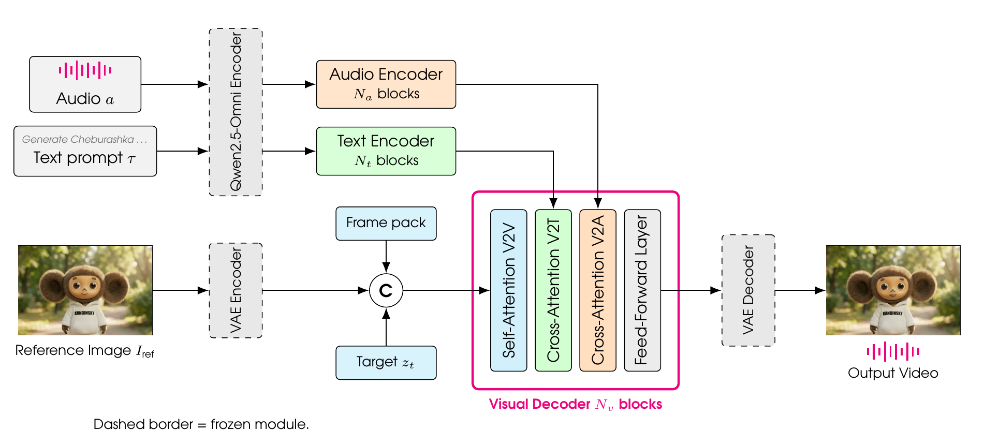

Audio-driven avatar video generation from a single reference image, a speech track, and an English or Russian prompt.
Kandinsky Avatar is an open family of speech-to-video models for controllable audio-driven human animation. From a single reference image, a speech waveform, and a text prompt it generates long-form 25 FPS video in which lip motion, expression, pose, and gesture follow the speech, while the prompt independently controls scene, camera, and action. Quality follows from three connected design decisions: an architecture that draws text and acoustic conditioning from one Qwen2.5-Omni checkpoint and adds a reference-aware three-scale visual memory; a training recipe that starts from the Kandinsky 5.0 Video foundation models and combines mixed reference-memory layouts, an area-normalized face loss, and block-sparse high-definition attention; and a corpus of 1.17M single-speaker clips selected by active-speaker detection and captioned natively in English and Russian. The resulting 2B and 21B models achieve the strongest lip synchronization among open-source speech-to-video systems and rank first in aggregate quality on EMTD, CelebV-HQ, and HDTF, and human raters prefer them over open-source and commercial competitors in synchronization, motion naturalness, and hand generation.
Kandinsky Avatar is a 3D Diffusion Transformer trained with a flow-matching objective in the latent space of a frozen Hunyuan video VAE, and initialized from the Kandinsky 5.0 Video text-to-video and image-to-video checkpoints. Three design choices carry the results above: (1) a shared Qwen2.5-Omni front end, whose frozen Thinker and audio tower feed two trainable DiT-internal stacks, replacing the standalone Wav2Vec or Whisper path used by most recent S2V systems; (2) a reference-aware three-scale FramePack memory with mixed reference placement, which packs past frames at progressively coarser patch sizes and keeps the identity reference far from the target on the temporal RoPE axis, suppressing pose copying and autoregressive looping in long rollouts; and (3) an area-normalized face loss, weighted inversely to the face-area ratio of the clip so lip-sync supervision survives when the speaker occupies a small part of the frame. Audio enters only at periodically spaced decoder blocks — 13 of 32 in the 2B model and 18 of 60 in the 21B Pro model — aligned per latent frame, and Pro adds NABLA block-sparse attention for high-definition training while the reference latent stays dense.
